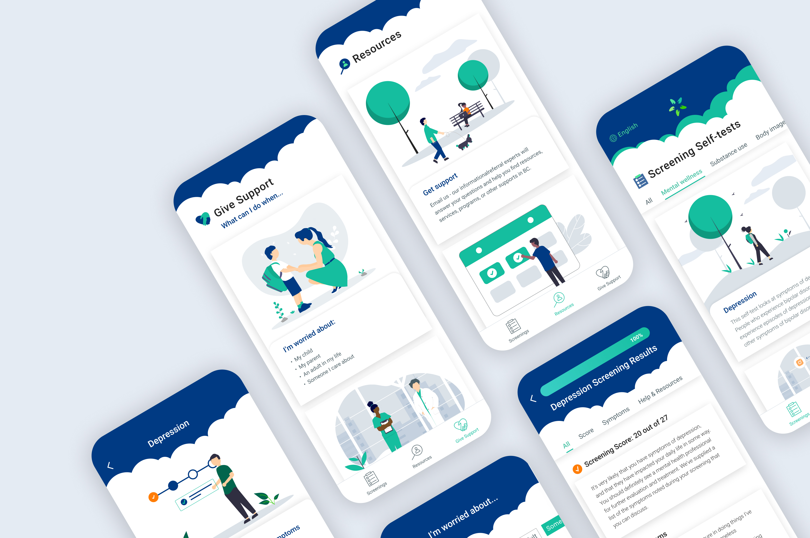
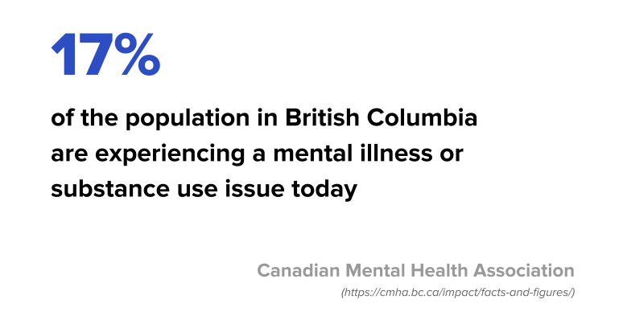
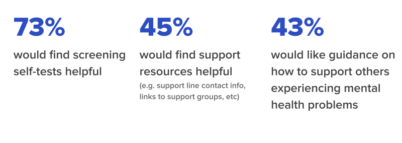
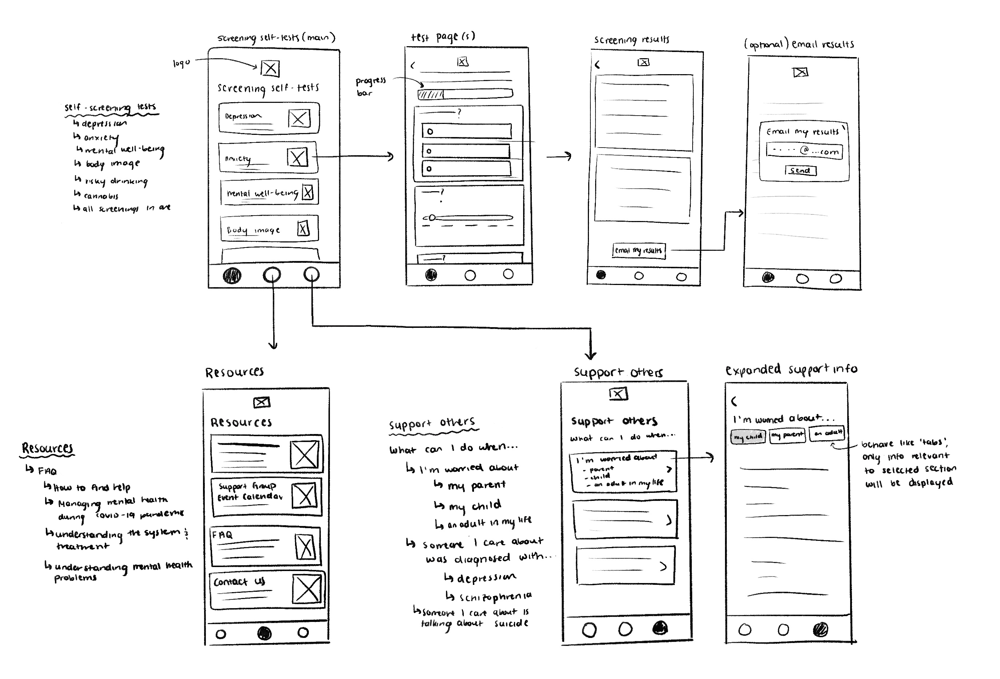
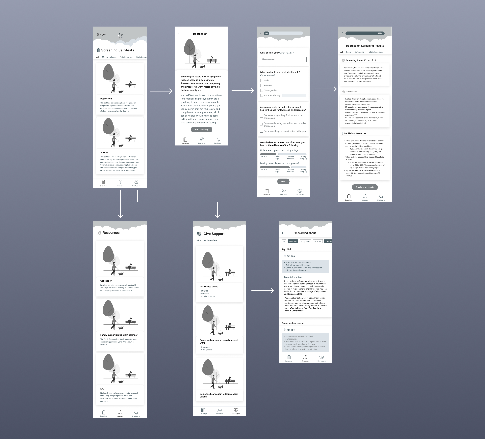

HereToHelp - Wish design challenge
Creating a mobile experience to make mental health guidance more accessible and intuitive.
PROJECT DETAILS
Tools: Figma, Adobe XD
Timeframe: 10 days (Mar 5-15)
Product: Mobile app, Slide deck, Prototype click-through
PROJECT BACKGROUND + GOAL
This project was for the Wish Design Challenge. The prompt was to choose an existing organization and help them design a mobile experience that allows an individual to tackle a major problem afflicting society today. I created a mobile experience for HereToHelp, to make mental health guidance more accessible and intuitive for users. Especially during the COVID-19 pandemic when seeking guidance in-person poses a risk to one’s physical health, the mental health resources on HereToHelp could be useful for individuals who would like to learn more about their mental health, or how to support others.
RESEARCH
Company background
HereToHelp is a project of the BC Partners for Mental Health and Substance Use Information, created by a team of seven leading mental health and substance non-profit agencies. Their goal is to help people in BC manage their mental health by providing resources & concrete steps towards better understanding mental health.
The problem
Many individuals experience mental illness, yet do not seek help or will wait until the condition becomes severe or even life-threatening because they do not know where to seek guidance.
Perception test
Users got 8-10 minutes to freely explore the HereToHelp website and verbalize their thoughts. The perception test results helped me better understand the existing services of the HereToHelp website and its potential strengths/weaknesses. This also allowed me to discover what I might want to tweak or add in the app.
Scenario test
I asked users to take a screening self-test on the website and verbalize their thoughts during the process. Based on the background research, screening self-tests were an important existing function of the website. The user feedback on these tests allowed me to define any pain points or potential areas for improvement.
*Note: A screening self-test is a short, anonymous self-test that helps users discover their likelihood of having a mental illness or symptoms, before deciding to seek a mental health professional.
Top feedback
The top user feedback I gathered from the perception and scenario tests:
Pros
- Self-test is useful for learning about symptoms & how to get help
- Can learn how to support yourself and others
- Lots of reliable info on various mental health topics
Cons
- There is no way to track progress in the self-test
- Light font colours are difficult to read on white background
- Too much scrolling/ searching required to find self-tests
User survey
I did a survey to narrow down the main pain points that target users may face when seeking mental health support. This feedback also helped me define the main functions for the app.
Goals
- Understand the users’ needs when they are seeking mental health guidance
- Determine users’ frustrations when seeking mental health guidance
- Identify functions users might expect to see on an app that provides mental health guidance
Participants
- # of Responses: 40
- Age: 18-35
- Location: British Columbia (HereToHelp's target audience)
Results
3 Key Pain Points
I identified 3 key pain points that users experience when seeking mental health guidance, based on the user tests and survey.
1. Inconvenience
Users avoid seeking help for mental illness due to inconvenience - they don’t have enough time, it’s too much hassle, or it's too expensive.
2. Lack of Resources
Users avoid seeking help due to lack of accessibility to resources - they don’t know where to look/who to ask for help.
3. Lack of Support Knowledge
Users want to support others they care about who are experiencing mental health problems but are unsure how.
Ideation & Testing
User personas
3 Main solutions
I identified 3 main solutions to include in the mobile app, based on the 3 key pain points identified from the user research.
1. Mental health screening self-tests
Short, anonymous, free self-tests for mental health that help users discover their likelihood of having a mental illness before seeing a doctor. The results also provide a list of symptoms that can helpful for users who are nervous about what to say during an appointment. This was also an existing function of the HereToHelp website.
2. Resources
Information and links to support lines, referral services, support groups, and more. Multiple resources on one page targeted towards providing mental health support to users in British Columbia could help individuals find nearby guidance in their area more easily (e.g. contact info for mental health organizations so users can easily contact them without having to search for each organization's info on their own).
3. Education on how to support others
An organized page providing education on how to help others experiencing a mental illness, which could help users learn how they can provide support for those they care about. HereToHelp already had a variety of reliable info on their website on how to support those you care about.
Low-fidelity user flows
I created a user flow map based on the personas and target functions I defined.
Mid-fidelity user flows
I created mid-fidelity designs, also accounting for the user feedback I got from the surveys and tests (e.g. added progress bar to the self-test so users can see how far into the test they are).
Mid-fidelity usability testing
Before creating high-fidelity designs, I did a usability test on my mid-fidelity designs to validate my initial ideas and get user feedback, making iterations where needed. I asked 5 participants to perform two tasks:
- Find & complete a self-screening test
- Find a link to a support resource
Prototyping
High-fidelity designs
- Added color and branding to the app based on the website UI
- Based on user feedback, tweaked colors to improve accessibility & meet contrast requirements
- Added certain UI elements to give a more approachable look and feel (e.g. clouds in header)

Prototype demo
Prototype click-through: A video demo of the main user flows for the HereToHelp mobile app (note: the screening self-test is shortened for the purpose of the demo).
Reflection
What I learned
Given time, do a competitive analysis
There are many apps targeted towards mental health support in the market. Competitive analysis could allow me to define functions that existing apps have/lack, while also identifying their strengths/ weaknesses and potentially improving my design.
Future steps
Expand to other provinces
Expand services to other provinces in Canada. Give users the option to indicate their location at the beginning of the experience so that their results are catered to resources that are nearby.
More usability testing
Test high-fidelity designs for accessibility and usability, and implement feedback from tests into further design iterations.